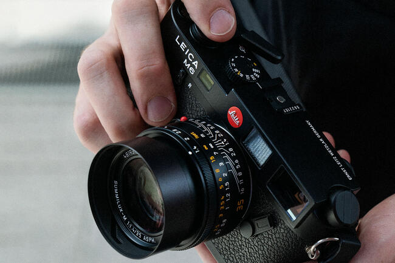
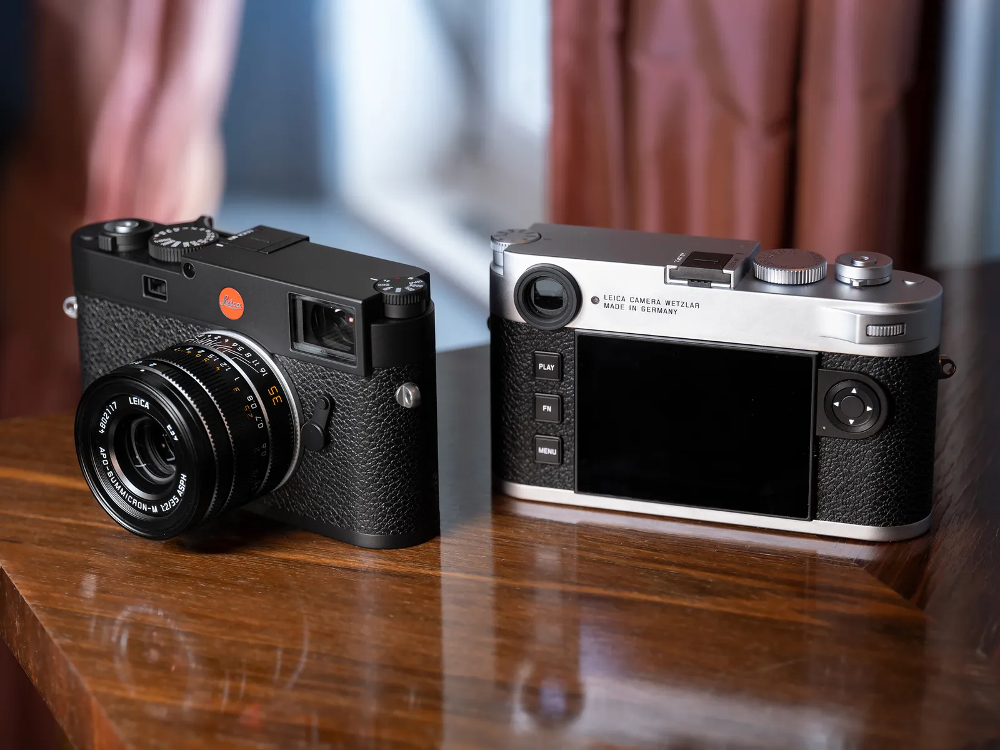
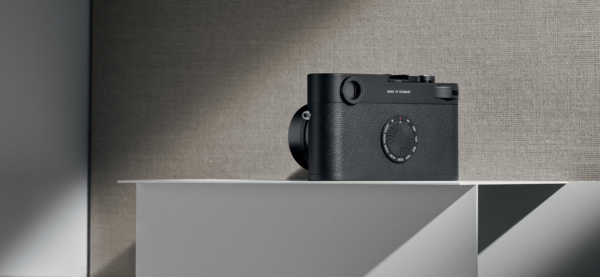

| 모델 | 사진 | 특징 | 가격 (KRW) |
|---|---|---|---|
| M6 |  |
M6는 라이카 M 시리즈의 상징적인 디자인을 계승하여, 필름 카메라의 클래식한 매력을 제공합니다. 독특한 외관과 감각적인 조작은 촬영의 즐거움을 더합니다. | 6,000,000 |
| M11 |  |
M11은 60MP의 높은 해상도를 제공하여, 세밀한 디테일과 뛰어난 화질을 자랑합니다. 이는 인쇄물이나 대형 작품 제작에 적합합니다. | 10,000,000 |
| M11-D |  |
이 카메라는 사용자가 조작할 때 화면의 메뉴를 최소화하여, 촬영에만 집중할 수 있도록 설계되었습니다. 이는 필름 카메라의 감성을 살리려는 라이카의 철학을 반영합니다. | 10,500,000 |